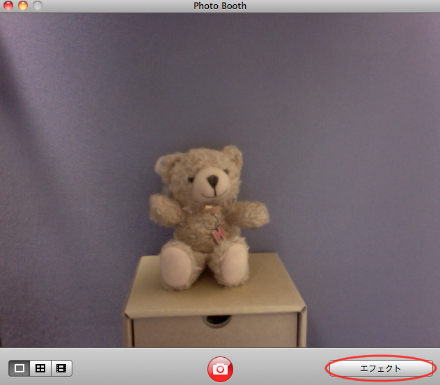
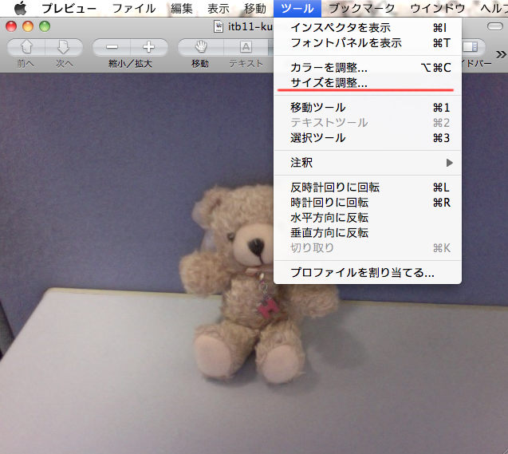
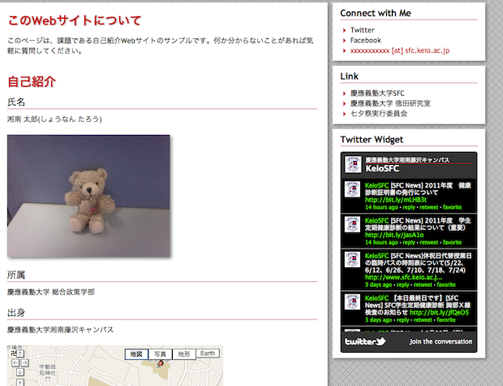

第7回：画像の貼りつけとハイパーリンク，外部Webサービスの埋め込み
前回まででWebページ作成の基礎を学び，HTMLが書ける様になった． 今回ではWebページに任意の画像を貼り付ける方法と，他のページへのハイパーリンクを貼る方法について学ぶ． また，昨今のWebページで一般的な外部Webサービスの埋め込みについても学習する． 第7回までの内容で，自己紹介のためのWebページを作るのを目標とする．
画像の貼り付け
これまでの授業では，自分の Web ページを主に文字で構成することを学習した． しかし，ページを閲覧する人がより内容について理解を深めるために，適切な画像や映像，地図といった マルチメディアコンテンツを利用すべき場面がある．今回は，そうしたマルチメディアコンテンツを有効に利用するための方法について解説する．
自己紹介のための Web ページを作ることになったので， ここでは，自分の顔写真(あるいは似顔絵やイメージ画像)を名前のそばに添えてみよう．

Photo Booth を使った写真の撮影
Finder から アプリケーション -> Photo Booth を選択し，起動する．
Photo Booth は，Mac の画面上枠に埋めこまれているカメラを使って写真を撮影，加工することのできるソフトウェアである． 試しに自分の写真を撮影してみよう．

「エフェクト」のメニューから，様々な効果を付加して撮影することもできる．
撮影した画像は，自分のホームディレクトリの ピクチャ -> Photo Booth の下に保存される． ファイル名が「写真(日付)」と日本語で作成されているが，日本語ファイル名のままだとページへの貼付けに支障をきたすので アルファベットのファイル名( taro_picture.jpg など)に変更しておこう．
画像のサイズを調整する
ファイルを開くと，プレビューで写真が表示されるが，このまま Web ページに貼り付けるには少しサイズが大きすぎる． 適切なサイズに調整しよう． ツール -> サイズの調整 から写真のサイズを変更可能だ．幅，高さをそれぞれ半分の 320ピクセル * 240ピクセル にしておこう．
サイズの調整が終わったら ファイル -> 保存 として忘れずにセーブしておく． また，画像の特定の部分を切り抜くことも可能だ． マウスをドラッグして切り抜きたい場所を選択する．

その後，ツール -> 切り取り を選択すると，選択した箇所が切り取られて表示される．

切り抜きが終わったら，同じく ファイル -> 保存 を選択してセーブしておこう．
ページに貼りつけよう
画像の用意ができたら，実際に Web ページに貼りつけて表示させよう． 画像の表示には img タグを利用する．HTML 内の任意の場所で
<img src="画像ファイルへの相対パス，もしくは URL" alt="代替名" />
と記述することで指定したファイルを表示できる．代替名は画像が見つからなかった場合に表示される文字列である． 今回は，resourcesディレクトリ内にあるHTMLファイルから，imagesというディレクトリににある画像を保存して表示する． そのため，HTML ファイルから画像ファイルへの相対パスは "../images/taro_picture.jpg" であり， 以下の記述によって taro_picture.jpg をページ内に表示できる．
<!DOCTYPE html>
<html>
<head>
<title>03-02</title>
</head>
<body>
<img src="../images/taro_picture.jpg" alt="太郎" />
</body>
</html>
ブラウザで見る
画像が表示されず，alt属性に設定した代替名が表示されている場合は，src属性に指定したパスが間違っているか，画像がそもそも存在しない 可能性があるので，確認すること．
ハイパーリンクの作成
Webページはハイパーリンク（単にリンクとも呼ばれる）によって，マウスでクリックすることで別ページに遷移することができるのが特徴である． ここではハイパーリンクの貼り方を学ぶ
aタグによるハイパーリンク
ハイパーリンクの作成にはaタグを用いる．第6回でも少し解説したが，aタグのhref属性にリンク先のURL，または相対パスを記述することで， 要素がリンク対象になる． 要素に使えるのは文字列だけというわけではなく，imgタグを要素内に記述することで，画像自体をリンク対象にすることもできる．
<!DOCTYPE html>
<html>
<head>
<title>03-01</title>
</head>
<body>
<ul>
<li><a href="../lecture01.html">第5回ページへ</a></li>
<li><a href="http://www.sfc.keio.ac.jp/">SFCホームページへ</a></li>
<li>
<a href="http://www.google.co.jp/">
<img src="http://www.google.co.jp/images/logos/ps_logo2.png"
alt="google logo" />
</a>
</li>
</ul>
</body>
</html>
ブラウザで見る
外部の Web サービスが提供する情報を埋め込む
昨今のWebページでは，Webパーツやウィジェットと呼ばれる外部サービスの情報を自分のページに埋め込むことが一般的になった． ここでは，そうした外部Webサービスが提供する情報を埋め込む方法を説明する．
外部Webサービスとは
伝えたい情報の内容によっては，地図などを Web ページ内に埋め込み表示できると，より分かりやすく伝えることができる． Web サービスの中には，地図やアカウントの発言など，サービス内の情報を自分の Web ページに埋め込むことができるような機能や， 埋め込むための ウィジェット(Widget)を用意しているサービスもある．伝えたい内容に合わせて，情報の埋め込みを積極的に活用すると良い．
Google Maps でお気に入りのお店を紹介しよう
Google Maps は，世界中の地図を検索し，表示することのできる Web サービスである． またこのサービスは，特定の場所周辺の地図を切り出し，自分の Web ページに埋め込んで表示できる機能を提供している． 自分のお気に入りの店を地図に表示し，紹介してみよう．

まず最初にGoogle Maps (http://maps.google.co.jp/) の検索ボックスに，表示させたい場所の名前(店名でも検索できる)や住所を入力し，表示させる．

画面右上の「リンク」から「埋め込み地図のカスタマイズとプレビュー」をクリックすると，カスタマイズのためのウィンドウが開く．

地図のサイズをプレビューを見ながら確認し，画面下に生成されている HTML タグをコピーして，自分の Web ページの地図を表示したい場所に貼りつける．
Twitter ウィジェットを表示してみよう
Twitter は，ここ数年話題になっているマイクロブログサービスである． Twitter に関する細かい説明は省くが，このサービスも，自分の発言や他人の発言(公開される設定になっているもの)を自分の Web ページに表示することのできる ウィジェット(Widget: 簡易なプログラム)を提供している． Twitter Widget のページ(http://twitter.com/about/resources/widgets)にアクセスし，プロフィールウィジェット(あるいは，検索ウィジェット)を表示してみよう．

どちらかを選択して表示される情報をカスタマイズし，「完了&コード取得」をクリックするとカスタマイズされたウィジェットを表示するコードが出力される． カスタマイズした内容はコード内に含まれているため，例えばウィジェットの幅を変更したければ width: を，高さを変更するなら height を表示したい場所に合わせて変更すればよい．
演習
Google MapsとTwitter Widgetを埋め込んだHTMLファイルを作成し，動作を確認せよ．